Career & Professional Trajectory
A track record spanning grassroots immersion in the drylands of Rajasthan to state-wide civic campaigns in Bihar and high-stakes district governance in Odisha.
Public Policy & Development Practitioner
Department of Skill Development & Technical Education • Dhenkanal, Ex-Govt. of Odisha
Steering district-level execution of central and state skilling initiatives. Formulated the Dakshyata Panji live dashboard across 13 line departments; structured the PIA Performance Index tracking 14 agencies; organized 96 on-the-spot job drives delivering 1,803 offers.
Policy Fellow
Citizens for Public Leadership (CPL) • Remote
Selected for an 11-month national policy fellowship cultivating evidence-based public leadership — built expertise in multi-stakeholder negotiation, design thinking, advocacy and campaign strategy, adaptive leadership, persuasive policy writing, and strategic communications.
Fellow – Diplomacy, Foreign Policy & Geopolitics
Impact and Policy Research Institute (IMPRI) • Remote
Authored and published “Recalibrating Influence: India's International Storytelling and the Challenges of Public Diplomacy in the 21st Century.” Developed briefs on South–South cooperation, Indo-Pacific strategy, and global-governance reform; engaged senior diplomats and scholars including Amb. Shashank, Amb. Latha Reddy, Amb. Anil Trigunayat, and Prof. Swaran Singh (JNU).
Young Fellow, Jan Suraaj
Joy of Giving Global Foundation • Bhagalpur, Bihar
Led district- and state-level rollout of civic-engagement programmes promoting informed political participation, women's digital empowerment, and grassroots accountability. Conducted primary field research and co-created Panchayat-level development plans with elected representatives and local institutions.
Researcher
Independent Policy Research • Pune, Maharashtra
Conducted a socio-economic impact assessment of NEP 2020 implementation in Tier-2 cities; authored policy briefs on Digital Public Infrastructure in education, and formulated a strategic roadmap to close the education–employability gap.
Gandhi Fellow
Piramal Foundation • Jhunjhunu, Rajasthan
Partnered with the Rajasthan State Education Department to drive academic transformation across 10 remote government schools, directly impacting 1,870 students and 235 teachers. Designed Project-Based Learning modules and anchored the Teacher Learning Lab — 15 workshops reaching 450 rural educators.
Advocate
Global Schools Program, UN SDSN • Jhunjhunu, Rajasthan
Authored the India-focused Advocate Toolkit and launched the Changemakers Lab across 10 rural schools; delivered 20+ workshops for 150+ educators on SDG integration. Recognised as “Advocate of the Month” twice within a 6-month tenure (cohort of 200+).
Program Manager
Top India • Remote
Designed and executed a multi-phase grassroots awareness strategy on Panchayati Raj Institutions; convened focus groups, leader interviews, and a village-level civic march to strengthen youth–PRI dialogue.
Community Outreach
SPARSH Foundation • Pune, Maharashtra
Outreach and rehabilitation work for trafficked women in Budhwar Peth.
Community Outreach
Aamhi Saare Foundation • Pune, Maharashtra
WASH and education interventions in tribal communities.
Organisations I’ve Worked With
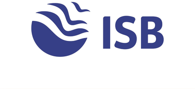
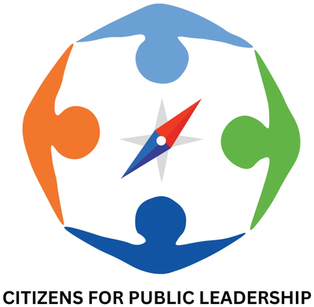
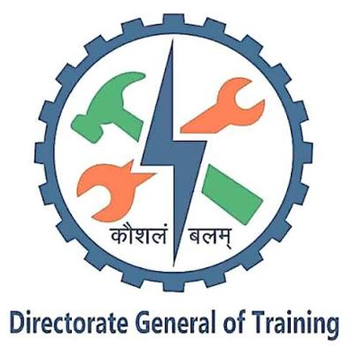
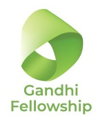
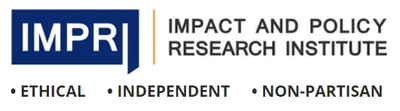
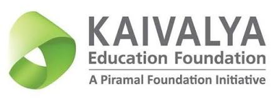

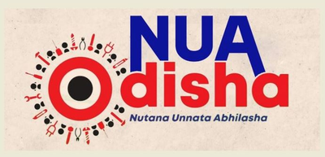
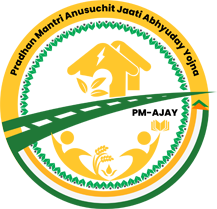
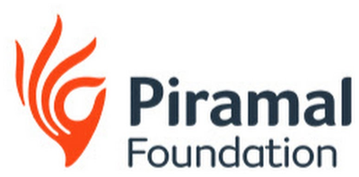
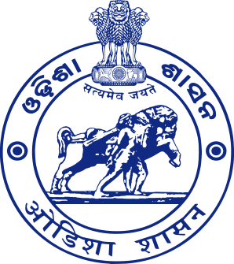
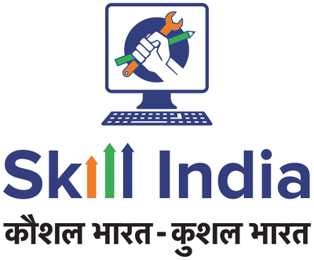
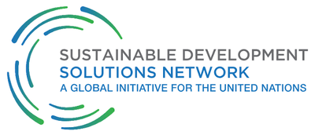
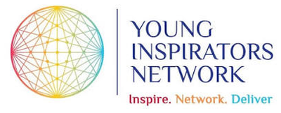
Endorsements
Read what colleagues and collaborators say — 29 LinkedIn recommendations from fellows, peers, and leaders across governance, education, and public policy.